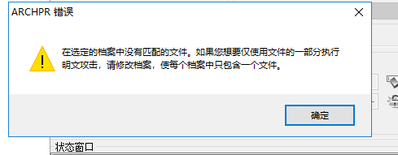
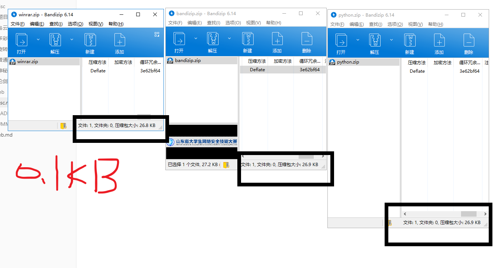
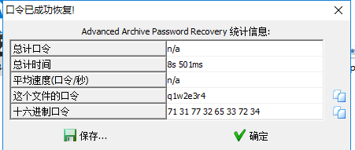

神秘的文件
神秘的文件
100
来源：第七届山东省大学生网络安全技能大赛
1.明文攻击
下面先附上一个链接 破解Zip加密文件常用的几种方法
01.Zip属性隐藏 02.Zip伪加密 03.暴力破解 04.明文攻击 05.CRC32碰撞
解压得到一个加密的压缩包和一个图片
图片和压缩包的文件同名，所以使用明文攻击
对比一下文件名称、文件大小、压缩后大小、修改日期、CRC值等。
使用 ARCHPR 进行明文攻击
logo.png 》》生成一个新的zip压缩包
直接使用明文攻击报错

备份原来 要破解的压缩包，用压缩包格式打开直接把其中无关的文件删除（除logo.png之外）
然后继续
坑点来了
此题建立明文的压缩包只能是WinRAR，而我使用的是bandizip，最后用python实现压缩文件，还是不能达到明文攻击的效果
下面进行比对一下这三种方法的信息

2.docx隐写
最后解的口令是 q1w2e3r4

打开文档，什么信息也没有
因为是docx格式 是XML格式，可以进行解压缩，使用everything搜索发现flag文件
是ZmxhZ3tkMGNYXzFzX3ppUF9maWxlfQ==
很熟悉的格式 base64 得 flag{d0cX_1s_ziP_file}